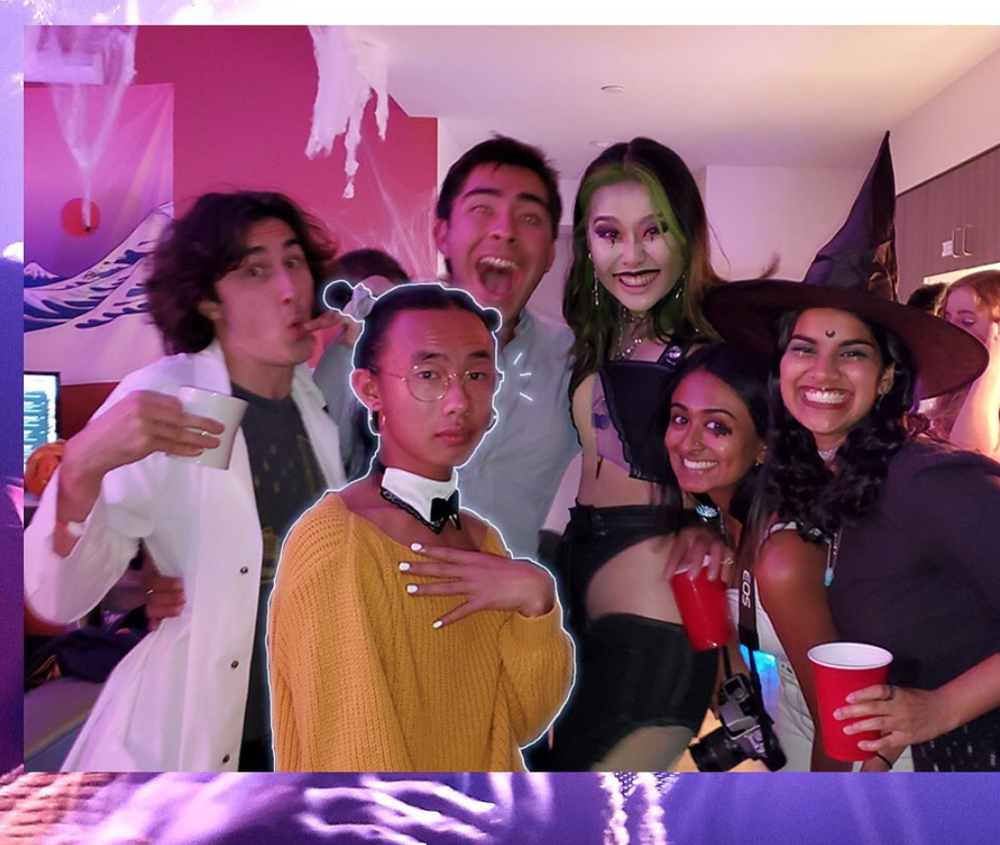

However, we MUSN'T forget Mr. Yin's edginess factor. It's just too much
to handle, yet impossible to resist. Here is a gallery simply demonstrated
just what an edge this man has.
another collage??? someone hold this man BACK
HE PAINTS HIS TOENAILS, SO PROGRESSIVE AND NONE OF THAT TOXIC
MASCULINITY
let's talk about this costume. words can't even describe it.
